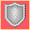
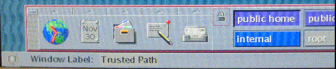

Solaris Trusted Extensions User's Guide
|
|||
|
1. Introduction to Solaris Trusted Extensions Software 2. Logging In to Trusted Extensions (Tasks) 3. Working in Trusted Extensions (Tasks) 4. Elements of Trusted Extensions (Reference) Files and Applications in Trusted Extensions Password Security in the Solaris OS Front Panel Security (Trusted CDE) |
Visible Features of Trusted ExtensionsAfter you have successfully completed the login process, as explained in Chapter 2, Logging In to Trusted Extensions (Tasks), you can work within Trusted Extensions. Your work is subject to security restrictions. Restrictions that are specific to Trusted Extensions include the label range of the system, your clearance, and your choice of a single-level or multilevel session. As the following figure illustrates, four features distinguish a system that is configured with Trusted Extensions from a Solaris system. Figure 4-1 Multilevel Trusted CDE Desktop
Labels on Trusted Extensions DesktopsAs discussed in Mandatory Access Control, all applications and files in Trusted Extensions have labels. Trusted Extensions displays labels in the following locations:
Figure 4-1 shows how labels display on a system that is configured to display labels. The system is using Trusted CDE as its desktop. A site can also be configured to hide labels. Even if your administrator has configured the system to hide labels, labeling is still in effect. The Query Window Label menu item can be used to display the label of a window. For an illustration, see Figure 3-4. Trusted StripeIn Trusted CDE, the trusted stripe appears in a reserved area at the bottom of the screen in all Trusted Extensions sessions. In Trusted GNOME, the trusted stripe appears at the top of the screen. The purpose of the trusted stripe is to give you a visual confirmation that you are in a legitimate Trusted Extensions session. The stripe indicates when you are interacting with the trusted computing base (TCB). The stripe also displays the labels of your current workspace and current window. The trusted stripe cannot be moved or obscured by other windows or dialog boxes. In Trusted CDE, the trusted stripe has two elements:
In Trusted GNOME, the trusted stripe has two additional elements:
Figure 4-2 PUBLIC Window Label in the Trusted Stripe
Trusted SymbolWhenever you access any portion of the TCB, the trusted symbol appears at the left of the trusted stripe area. If your configuration suppresses labels, then the trusted symbol appears with the trusted stripe. In Trusted CDE, the symbol appears to the left of the Front Panel. In Trusted GNOME, the symbol appears at the left of the trusted stripe. The trusted symbol is not displayed when the pointer is focused in a window or area of the screen that does not affect security. The trusted symbol cannot be forged. If you see the symbol, you can be sure that you are safely interacting with the TCB. Caution - If the trusted stripe is missing from your workspace, contact the security administrator. The problem with your system could be serious. The trusted stripe should not appear during login, or when you lock your screen. If the trusted stripe shows, contact the administrator immediately. Window Label IndicatorThe Window Label indicator displays the label of the active window. In a multilevel session, the indicator can help identify windows with different labels in the same workspace. The indicator can also show that you are interacting with the TCB. For example, when you change your password, the Trusted Path indicator displays in the trusted stripe. Figure 4-3 Trusted Path Indicator in the Trusted Stripe |
||
|